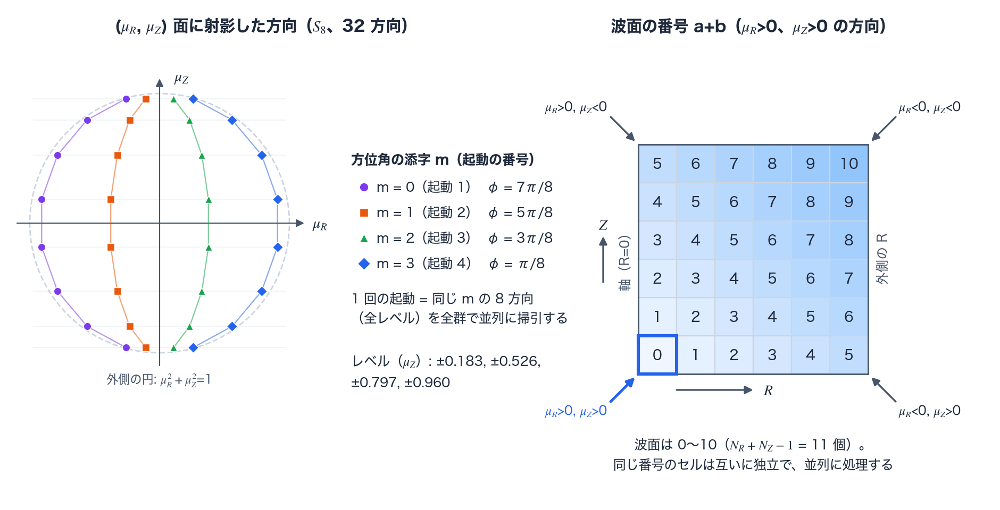

輻射輸送: SN reference
TENRYU の \(S_N\) ソルバは、1D — 既定は球対称で、Mesh.geometry_1d の平面・円筒の幾何にも対応する（円筒の幾何では、レベル数 \(L\) の直積求積（product quadrature）を使い、方向数は \(n=2L^2\) である）— と 2D 軸対称（axisymmetric）RZ を対象とする、決定論的な離散座標法（discrete ordinates method）の輻射輸送である。光子エネルギー群ごとに有限個の方向を追跡し、方向別の輻射強度（specific intensity）からセルのエネルギーと面の流束を構成する。光学的に薄い（optically thin）領域、自由飛行（free streaming）、強い異方性（anisotropy）が効く場面で、多群の流束制限拡散（multigroup flux-limited diffusion、FLD）を補完するが、方向数に比例する掃引（sweep）と源反復（source iteration）のコストを要する。この計算に固有の用語は用語の節で説明する。
物理機構
FLD は角度分布を、スカラーのエネルギーとその流束クロージャ（closure）へ縮約する。しかし、透明な領域を光子が自由飛行する場合、影ができる場合、あるいは焼き抜け（burn-through）・透明な隙間（gap）・直接照射（direct drive）のように離散的な方向から光が到来する場合には、角度分布そのものが解の一部になる。離散座標法は、連続な方向の球面を求積点（quadrature points）の集合 \(\{\boldsymbol\mu_m,w_m\}\) で置き換え、固定した方向ごとに輸送方程式を解き、その重み付き和から輻射のモーメントを再構成する。
ひとつの方向に沿う定常の輸送・吸収演算子は 1 階の移流方程式（advection equation）なので、各セルは上流側にしか依存せず、上流から下流への 1 回の走査、すなわち掃引でメッシュ全体を解ける。RZ 幾何では、方向の符号が決める上流の角からセルを対角ごとに処理する。この対角が掃引の波面で、\(\mu_R\)、\(\mu_Z\) がともに正の方向では対角 \(k=i+j\) が波面になり、同じ \(k\) のセルは互いに独立である。2D RZ の既定である線形特性法は、セル内で一定とした源に対する指数減衰を特性線（characteristic）上で厳密に積分する。古典的なダイヤモンド差分（diamond difference）はセル平均を入口面と出口面の算術平均とみなす外挿（extrapolation）なので、光学的に厚いセルでは負の強度を作り得るが、特性線上の状態は非負の源に対して必ず正である。
衝突は方向どうしを結合させる。離散座標法では等方的な源の項が角度積分後のスカラー束（scalar flux）を通じて掃引どうしを結合するため、掃引を源反復の中で繰り返す [2]。散乱比（scattering ratio。全消衰に占める散乱の割合）が 1 に近づくほど源反復の収束は遅くなり、任意選択の拡散合成加速（diffusion synthetic acceleration、DSA）[2, 3] がその遅い誤差モードの減衰を速める（適用範囲と既定値は用語の節）。物理散乱の不透明度 \(\sigma_{s,g}\) は、1D の \(S_N\) では材料の opacity.kappa_s（cm²/g。既定 0）から \(\sigma_s=\rho\kappa_s\) として与え、表形式の不透明度には散乱がない（EOS・不透明度・電離参照）。2D RZ の \(S_N\) では \(\sigma_{s,g}=0\) とし、kappa_s を使わない。2D RZ と 1D の線形特性法では、さらに外側でピカール反復が \(T_e\)、プランク分率（Planck fraction）、不透明度を更新し、セル局所の能動集合のニュートン法（active-set Newton method）— 非負制約に掛かった群を特定して境界に固定し、残りを解く方式 — で物質との結合を閉じる（用語の節）。FLD と異なり、純粋な sn_transport には Fleck の実効散乱（Fleck effective scattering）[1] がなく、\(f=1\) として素の \(\sigma^{PA}\)、\(\sigma^{PE}\) を非線形のエネルギー収支に入れる。
1D の \(S_N\) では、方向にも記憶がある。TENRYU は前ステップの方向別強度を sn_psi_prev に保持する。スカラーのエネルギーから毎ステップ等方に再構成すると、自由飛行が人為的な拡散に変わってしまうためである。2D RZ の掃引は時間微分の項をもたない定常の輸送なので、方向別強度をステップのあいだ持ち越さず、時間刻み \(\Delta t\) は輸送だけの状態の更新と物質との結合に入る。方向別に強度を解く代価として、計算量はおおむねセル数×群数×方向数×反復数に比例し、角度と面の作業領域も必要になる。FLD と同じ静止媒質（static medium）近似であり、物質運動による \(O(v/c)\) の項は含まない（この適用範囲はリポジトリの docs/NUMERICS.md §0.5 と §1.2 に記録されている）。
角度離散化と輸送モーメント
離散座標法（SN 近似 [5]）は角度空間を有限集合 \(\{\boldsymbol\mu_m,w_m\}\) に置き換える。1D 球対称では偶数次数のガウス–ルジャンドル集合を使い、既定は \(S_{16}\) である。\(S_8\) は掃引の計算量を減らす性能上の選択肢だが、角度誤差を明示するため設定時に警告を出し、\(S_8\)/\(S_{16}\) の収束検査の対象になる。2D RZ では \(\boldsymbol\mu_m=(\mu_{R,m},\mu_{Z,m})\) に直積求積を使い、方位角の積分を軸対称の求解に折り込む。\(\mu_Z\) に \(N\)（キー n_angles の値）点のガウス–ルジャンドル求積を取り、方位角 \(\omega\) には半周 \((0,\pi)\) を \(N/2\) 等分した各区間の中点を取って、\(\mu_R=\sqrt{1-\mu_Z^2}\cos\omega\) とする。各方向の重みは、\(\mu_Z\) のガウス–ルジャンドル重みを \(N/2\) で割った値である。方向数は \(N^2/2\) で、\(S_{16}\) なら 128 方向である。次数 \(N\) と方向数の関係は用語の節にまとめる。
角度掃引で得たセル平均の強度から、スカラー束と輻射エネルギー密度を
$$ \phi_{c,g}=\sum_m w_m\psi_{c,g,m}, \qquad E_{c,g}=\frac{\phi_{c,g}}{c} $$として求める。面の状態も同じ方向集合から縮約するため、R 面または Z 面 \(f\) 上の符号付き流束は
$$ F^{SN}_{f,g}=\sum_m w_m\,\mu^{face}_m\,\psi^{face}_{m,g} $$である。\(\mu^{face}_m\) は当該面の法線方向の余弦成分（R 面では \(\mu_{R,m}\)、Z 面では \(\mu_{Z,m}\)）、\(\psi^{face}_{m,g}\) は掃引で得た面上の角度強度である。符号の大域的な規約は、R 面では \(+R\)、Z 面では \(+Z\) 向きを正とする。セルのモーメントと面のモーメントを別々の近似から作らないことが、輸送の更新と、境界から逸出（escape）するエネルギーのエネルギー台帳（energy ledger。数値基盤参照）を、同じ離散輸送に結び付ける。
- \(\{\boldsymbol\mu_m,w_m\}\) は角度求積の方向余弦と積分重みである。1D 球対称では偶数次数のガウス–ルジャンドル集合を使い、実運用の既定は \(S_{16}\) である。2D RZ では上の直積求積を使う。重みの総和は、1D のガウス–ルジャンドル集合でも 2D RZ の直積求積でも \(\int_{-1}^{1}d\mu=2\) に等しい（方位角の積分は \(\psi\) に畳み込み）。連続な積分では \(\int_{\mu>0}\mu\,d\mu=1/2\) だが、離散集合の半球モーメント（half-range moment）\(\sum_{\mu_m>0}w_m\mu_m\) は 1/2 に等しくなく、ガウス–ルジャンドルの 16 点（\(S_{16}\)）で 0.5015 である。2D RZ の Z 面に入る方向の和 \(\sum_{\mu_{Z,m}>0}w_m\mu_{Z,m}\) も同じ値になり、\(N\) を増やすと 1/2 に近づく — 連続な値 1/2 が、下の Marshak 境界（Marshak boundary condition）の入射強度の係数 2 の根拠である。
- \(\phi_{c,g}=\sum_mw_m\psi_{c,g,m}\) は 0 次の角度モーメント、すなわちスカラー束であり、\(E_{c,g}=\phi_{c,g}/c\) がセルに保持する群ごとの輻射エネルギー密度である。
- \(F^{SN}_{f,g}\) は面上の 1 次角度モーメントである。符号はセルの外向きではなく大域的な規約に従うため、面ごとに 1 値の流束が、隣り合う 2 セルの発散へ符号を反転して入る。
- ドナー \(\theta\) 制限（donor \(\theta\) limiter）は、この面モーメントに対する送出の制限である。上流セルがそのステップ中に使える輻射エネルギーを超えて送り出す場合にかぎり、外向きの面流束を縮小する（定義は用語の節）。
- \(\psi_{\rm in}\) は境界に与える、内向き半球の強度である。2D の Marshak 面では、内向きのすべての方向に \(\psi_{{\rm in},m}=2F_{\rm inc}\) を与える。係数 2 は連続な半球モーメント 1/2 に対応し、連続な積分では入射流束が \(\int_{\mu>0}\mu\,(2F_{\rm inc})\,d\mu=F_{\rm inc}\) になる。離散集合では実際に注入される流束が \(2F_{\rm inc}\sum_{\mu_m>0}w_m\mu_m\) で、\(N=16\) では \(F_{\rm inc}\) の 1.003 倍である。

0、μZ>0 の方向の波面の番号 a+b（0〜10）を書き、左下の上流の角と、ほかの 3 つの符号の組の開始の角を矢印で示した図">この計算で使う用語
\(S_N\) ソルバの記述は、角度求積、掃引、反復、境界、物質との結合の各段で、この実装に固有の意味をもつ語を使う。それらを、1D と 2D RZ の \(S_N\) ソルバでの意味でまとめて定義する。
次数 N と方向数
次数 \(N\)（order）は、キー Radiation.sn_transport.n_angles の値で、角度求積の大きさを決める整数である。\(S_{16}\) の添字が次数を表す。許容値は 2、4、8、16、32 で、既定は Studio もデッキで指定しないときも 16 である。1D の円筒の幾何（Mesh.geometry_1d="cylindrical"）では \(N=2L^2\)（\(L=2,\dots,32\)。8、18、32、50、…）だけが許され、既定の 16 は受け付けられない。
方向（ordinate）は、求積が選ぶ離散的な進行方向 \(\boldsymbol\mu_m\) と重み \(w_m\) の組で、掃引は方向ごとに行う。方向数は 1D で \(N\)、2D RZ で \(N^2/2\) である。2D RZ の求積は、\(\mu_Z\) の \(N\) 個の値のそれぞれをレベル（level）と呼び、各レベルに \(N/2\) 個の方位角の分点を組み合わせた直積で、各方向の重みは、そのレベルのガウス–ルジャンドル重みを \(N/2\) で割った値、全方向の重みの総和は 2 である（式は角度離散化の節、\(N=8\) の方向の配置は図A左）。方向数は次のとおりである。
| 次数 \(N\) | 1D の方向数 | 2D RZ の方向数 |
|---|---|---|
| 4 | 4 | 8 |
| 8 | 8 | 32 |
| 16 | 16 | 128 |
| 32 | 32 | 512 |
次数を上げると、方向の数が有限であることによる角度の打ち切り誤差（truncation error）とレイ効果（ray effect）が減る。一方、掃引の計算量と方向別の配列のメモリは方向数に比例して増え、2D RZ では \(N^2\) に比例する。\(N=8\) を選ぶと設定時に警告が出る。
キー angular_quadrature（既定 "level_symmetric_16"）の値は、"level_symmetric_8"、"level_symmetric_16"、"level_symmetric_32"、"product" のいずれかであることだけが検査される。"level_symmetric_N" を与えると n_angles が \(N\) に設定され、求積の種類は変わらない。名前に反して、レベル対称求積（level-symmetric quadrature）は実装されていない。
掃引、波面、起動
掃引（sweep）は、ひとつの方向について、輸送方程式を上流のセルから下流のセルへ順に解き、全セルのセル平均の強度と面の強度を求める 1 回の走査である。上流と下流は方向の符号が決める。ひとつの方向の掃引は、ほかの方向の掃引から独立なので、方向ごとに並列に実行できる。
波面（wavefront）は、ひとつの掃引のなかで互いに依存せず、同時に処理できるセルの集まりである。2D RZ では、上流の角から数えた R 方向の段数 \(a\) と Z 方向の段数 \(b\) の和 \(a+b\) が等しいセルが同じ波面に属する（図A右）。\(N_R\times N_Z\) のメッシュの波面の数は \(N_R+N_Z-1\) で、和の小さい順に処理する。輻射が空間を進む前線は、波面と区別して前線と書く。
起動（launch）は、CUDA の関数（CUDA カーネル）を GPU へ 1 回呼ぶことである。2D RZ の掃引は、源反復 1 回あたり、方位角の添字 \(m=0,1,\dots,N/2-1\) ごとに 1 回、合わせて \(N/2\) 回起動する。1 回の起動は \(N\times G\) 個の CUDA ブロック（block。スレッドの組。\(G\) は群の数）をもち、1 つのブロックが 1 つの群の 1 つの方向を担当して、そのスレッドが波面のなかのセルを分担する。添字 \(m\) は、各レベルの方向を \(\mu_R\) の負の大きい方向から正の大きい方向へ並べた順を表す。\(m\) の順に起動するのは、同じレベルの方向が、方位角方向の角度再配分の項を通じて、前の方向の出射強度を受け取るためである（掃引の節）。\(\mu_R\) が負の方向はすべて \(\mu_R\) が正の方向より先に処理されるので、軸の反射パリティで鏡映した方向の出射強度を、同じ反復のなかで使える。1D の掃引は、群ごとに 1 つの warp（CUDA の 32 スレッドの組）が担当し、起動の分け方が異なる。
源反復と外側反復
源反復（source iteration）は、等方散乱源 \(\sigma_s\phi/2\) が掃引で求めるスカラー束 \(\phi\) に依存する循環を、前の反復の \(\phi\) で源を作り、全方向を掃引して新しい \(\phi\) を得る代入で収束させる反復である。外側反復に対する内側の反復なので、namelist のキー名には inner が付く。停止は、スカラー束の相対変化（セルと群についての最大値）が inner_tol（既定 1e-6）以下になったときで、上限は max_inner_iterations（既定 100）である。\(\sigma_s\) がすべて 0 のとき、1D の線形特性法は源反復を行わず、外側反復 1 回につき掃引を 1 回だけ行う。2D RZ で源反復が必要になるのは、外側 R 面と Z 面の反射境界だけである。
外側反復（outer iteration）は、物質の電子温度 \(T_e\) を固定して輸送を解いたあと、物質との結合を解いて \(T_e\) を更新し、不透明度とプランク分率を新しい \(T_e\) で評価し直して輸送を解き直すことを、\(T_e\) が収束するまで繰り返す反復である。前の値との混合（緩和）を使わない代入なので、ピカール反復である。上限は max_outer_iterations（既定 20）、許容値は outer_tol（既定 1e-4。1D ではさらに outer_tol_hydro_error_scale（既定 1e-5）の 10 倍が下限になる）である。1D の線形特性法は、5 回以上反復したあとに、残差の 2 回前の残差に対する比が outer_tol_stagnation_factor（既定 0.5）を超えたときも反復を打ち切る。1D の線形不連続法の外側反復は、節点の電子温度についてのニュートン反復である。
反射パリティ
反射パリティ（reflective parity）は、2D RZ の軸 \(R=0\) の境界条件で、軸から計算領域へ入る方向 \((\mu_R,\mu_Z)\)（\(\mu_R>0\)）の入射強度として、同じ \(\mu_Z\) で \(\mu_R\) の符号を反転した方向 \((-\mu_R,\mu_Z)\) が軸に到達する強度を使う規則である：\(\psi(R=0,\mu_R,\mu_Z)=\psi(R=0,-\mu_R,\mu_Z)\)。軸は物理的な壁ではなく対称軸で、軸を通る光線は直進し、場が軸対称なので、軸に向かう方向 \((-\mu_R,\mu_Z)\) の強度が、軸から離れる方向 \((\mu_R,\mu_Z)\) の強度になる。求積は、どの方向にも \(\mu_R\) の符号だけを反転した同じ重みの方向が対になって存在するように作ってあり、対の対応表を掃引の準備で作る（手順 1）。
キー Radiation.sn_transport.boundary.inner_r（既定 "reflect_parity"）が軸の境界条件を表す。"reflect" も受け付けるが、2D RZ の \(S_N\) は軸を常にこの規則で扱い、値によって挙動は変わらない。Studio は "reflect_parity" を書き出す。
輸送だけの状態とドナー θ 制限
輸送だけの状態（streaming-only state）\(E^*\)は、物質との交換を入れずに、ステップの輸送だけでセルの群ごとのエネルギー密度がどう変わるかを表す量である。2D RZ では、面ごとに 1 値の流束（ドナー \(\theta\) 制限後）の発散から \(E_g^*=E^n_g-\Delta t\,\nabla\cdot F\) として作る（セルごとの式は掃引の節）。\(E^*\) には下限を課さない。負になった分は、物質クロージャの収支へそのまま渡り、能動集合のニュートン法が補う（次項）。輻射と物質の結合を、輸送（\(E^*\)）とセルごとの物質の収支に分けて解くために要る量である。
ドナー \(\theta\) 制限（donor \(\theta\) limiter）は、セルがステップのあいだに外へ運ぶ輻射エネルギーが、そのセルのエネルギーと流入するエネルギーの和を超えないように、そのセルから出る面流束へ掛ける係数 \(\theta\le1\) である。輻射を出す側のセルをドナー（donor）と呼ぶ。セル \(c\) からステップのあいだに出ていくエネルギー密度を \(O_c\)（外向きの流束と面積の積の和に \(\Delta t/V_c\) を掛けたもの）とする。2D RZ の制限は 2 段である。第 1 段は、流入を数えずに \(\theta^{(1)}_c=\min[1,E^n_c/O_c]\) とする。第 2 段は、上流のドナーが第 1 段の係数で実際に渡せる流入のエネルギー密度 \(I_c\) を加えて \(\theta_c=\min[1,(E^n_c+I_c)/O_c]\) とする。最後に、各面の流束へ、その面の上流のセルの \(\theta_c\) を 1 回だけ掛ける。ひとつの共有面には制限後の流束がひとつしかないので、隣り合うセルへの寄与は相殺したままになり、制限後の \(E_c^*\) は、丸めを除いて負にならない。
この制限は常に有効で、namelist のキーはない。\(\theta\) は 0 から 1 の値で、1 のときは制限が働かない。1D の線形特性法は、流れの順に各セルの係数を決める（手順 4）。
能動集合のニュートン法と物質クロージャ
物質クロージャ（material closure）は、輻射と物質のエネルギー交換を閉じる、セルごとの方程式である。入力は輸送だけの状態 \(E_g^*\) とステップ開始時の電子温度 \(T_e^n\)、出力は電子温度 \(T_e\) と、それに整合する群のエネルギー密度 \(E_g^+(T_e)\) である。\(\lambda^{PA}_g=c\Delta t\,\sigma^{PA}_g\)、\(\lambda^{PE}_g=c\Delta t\,\sigma^{PE}_g\)（\(\sigma^{PA}_g\)、\(\sigma^{PE}_g\) は群 \(g\) の吸収と放出の不透明度）として、
$$ E_g^+(T_e)=\max\left[\frac{E_g^*+\lambda^{PE}_g\,a_{\rm eV}T_e^4\,b_g(T_e)}{1+\lambda^{PA}_g},\;0\right] $$である。解くのは、輻射と物質の合計のエネルギーを保存する残差 \(R(T_e)=U_e(T_e)-U_e(T_e^n)+\sum_g[E_g^+(T_e)-E_g^*]=0\) である（\(U_e=\rho e_e\) は物質のエネルギー密度）。正値性 \(E_g^+\ge0\) は最終の \(E_g^+\) にだけ課し、\(E_g^*\) が負でも、その分は残差に入って物質との交換として扱う。
能動集合（active set）は、\(E_g^+=0\) に固定される群、すなわち非負の制約が効いている群の集合である。\(R\) の \(T_e\) についての微分 \(\rho c_{v,e}+\sum_{g:\,E_g^+>0}[\lambda^{PE}_g/(1+\lambda^{PA}_g)]\,4a_{\rm eV}T_e^3b_g\) には、制約が効いていない群（\(E_g^+>0\)）だけが寄与し、\(db_g/dT_e\) は含めない（\(c_{v,e}\) は電子の比熱）。残差自体は \(b_g\) を試行温度で評価するので、収束した解は厳密である。
能動集合のニュートン法（active-set Newton method）は、\(R(T_e)=0\) を \(T_e\) について解く反復で、解を挟む区間 \([T_{\rm floor},T_{\rm hi}]\) を保つ。\(T_{\rm floor}\) は温度の下限、\(T_{\rm hi}\) は物質と輻射の合計のエネルギーから決まる上限である。ニュートン法の段が区間の外に出るとき、または微分が正でないときは、区間を二分する。反復は最大 60 回（コードに固定した値で、namelist のキーではない）で、残差の大きさがエネルギーの規模に機械精度の 64 倍を掛けた値を下回るか、区間の幅が機械精度に達したときに止まる。解を挟めないとき（\(R(T_{\rm floor})>0\)、または上限の拡張に失敗したとき）は、時間刻みの全体の再試行を要求するフラグを立てる。能動集合を使うので、\(E^*\) が負になっても、輻射と物質の合計のエネルギーはセルごとに保存される。
拡散合成加速（DSA）
拡散合成加速（diffusion synthetic acceleration、DSA）は、源反復の遅い誤差を、拡散方程式で推定した補正で取り除く加速である [2, 3]。散乱比が 1 に近いとき、源反復の誤差のうち空間的に滑らかな成分は、反復ごとにわずかしか減らない。DSA は、1 回の掃引のあとに、散乱の残差 \(\sigma_s(\phi^{\rm sweep}-\phi^{\rm old})\) を右辺とする拡散方程式を解いて補正 \(\delta\phi\) を求め、\(\phi\) へ加える（\(\phi\leftarrow\max(\phi+\delta\phi,0)\)）。ここで \(\phi^{\rm sweep}\) は掃引で得たスカラー束、\(\phi^{\rm old}\) はその掃引の入力に使った前の反復のスカラー束である。2D RZ では、拡散係数を \(D=1/(3\sigma_t)\)（\(\sigma_t=\sigma_a+\sigma_s\) は全消衰係数。セルどうしの境界の値は調和平均）とし、この方程式を固定した 50 回のヤコビ反復で解く。1D の線形特性法では、掃引の離散化と整合する 5 重対角の連立方程式を群ごとに直接解く。
キー Radiation.sn_transport.dsa_enabled（既定 true）が DSA を切り替える。1D の線形不連続法はこのキーを読まず、散乱があるときに、掃引と整合する P1 系による同種の加速を使う。補正の右辺は \(\sigma_s\) に比例するので、\(\sigma_s=0\) では補正が 0 になり、DSA の有無で結果は変わらない。2D RZ は常に \(\sigma_s=0\) なので、現行の 2D RZ では DSA は結果に影響しない。
線形不連続法の節点表現
線形不連続法（linear discontinuous scheme）は、1D の既定の空間離散化（spatial_scheme="linear_discontinuous"）で、強度、放出と散乱の源、電子の比エネルギーを、各セルの内部で線形関数とし、セルの左右の端に置いた 2 つの節点（node）の値で表す。ここでの節点は、セルごとに 2 個ある値の保存点で、メッシュの節点とは別に数える。不連続（discontinuous）は、隣り合う 2 つのセルが共有する面で、両側の節点の値が一致しなくてよいことを指す。線形特性法はセル内で源を一定とするが、線形不連続法はセル内の傾きをもつので、セルの光学的厚さ \(\sigma\Delta r\) が 1 を超える厚い媒質でも拡散極限の流束を保つ（1D の線形不連続法の節）。
節点の値は、強度が方向ごとに 2 個、電子の比エネルギーが 2 個で、前ステップの強度（sn_psi_prev）と、セル内の温度分布（左右の節点の電子の比エネルギーの差）をステップのあいだ持ち越す。この離散化は 1D 専用で、2D RZ で spatial_scheme="linear_discontinuous" を指定すると設定時の誤りになる。
RZ メッシュ上の掃引と有限体積更新
2D RZ の源反復は、群と方向ごとに構造格子（structured mesh）を上流から下流へ掃引する。掃引の起動（launch）は方位角の添字 \(m=0,1,\dots,N/2-1\) ごとに 1 回で、1 回の起動が、全群と \(\mu_Z\) のすべてのレベル（ガウス–ルジャンドル求積の分点）の方向を並列に掃引する（CUDA の 1 ブロックが 1 つの群の 1 つの方向を担当する）。起動を \(m\) の順に分けるのは、\(\mu_Z\) が同じレベルの方向どうしが、方位角方向の角度再配分（angular redistribution）の項（曲がった座標系で、直線に沿って進む光線の方向余弦が座標とともに変わることから現れる、角度についての微分の項）を通じて、\(m\) の順に前の方向の出射強度を受け渡すためである。各ブロックの内部では、方向の \(\mu_R\)、\(\mu_Z\) の符号が決める上流の角から始めて、R/Z の依存関係を保つ対角の波面順序でセルを処理する。方向別のセル平均と面の状態は方向ごとの作業用の配列に保持し、方向番号の昇順で決定論的に縮約する。これにより、方向についての並列性を活かしながら加算順序を固定できる。起動、波面などの定義は用語の節にまとめる。
2D RZ の既定（1D では指定したとき）の spatial_scheme="linear_characteristic" は、セル内で一定とした源に対し、特性線上の指数減衰を積分する。旧来の diamond_difference は回帰試験（regression test）用に残した非推奨のオプションである。線形特性法の掃引は、非負の源から必ず正の出射状態を構成し、光学的に薄い極限での有限体積的な源のスケーリングを保ちながら、ダイヤモンド差分の外挿による出射を置き換える。
各セル \(c=(i,j)\) の輸送だけの状態（streaming-only state）は、面ごとに 1 値の流束の発散から直接作る。
$$ E^{*,flux}_{i,j,g}=E^n_{i,j,g}-\Delta t\, \frac{A^R_+F^R_+-A^R_-F^R_-+A^Z_+F^Z_+-A^Z_-F^Z_-}{V_{i,j}}. $$ここで \(E^n\) はステップ開始時のエネルギー密度、\(V_{i,j}\) はセルの体積、\(F^R_\pm\)、\(F^Z_\pm\) はセルの R 面と Z 面の符号付き流束（添字 \(+\) は座標の大きい側、\(-\) は小さい側の面で、ドナー \(\theta\) 制限後の値）、\(A^R_\pm\)、\(A^Z_\pm\) はその面の面積である。面積は \(A^R=2\pi r\Delta z\)（\(r\) は面の半径、\(\Delta z\) はセルの Z 方向の幅）、\(A^Z=\pi(r_+^2-r_-^2)\)（\(r_\pm\) はセルの外側と内側の半径）である。軸上の面は幾何的な面積が 0 であり、配列も発散を評価する前に明示的に 0 で初期化する。\(E^{*,flux}\) 自体には下限を課さず、出射が蓄えられたエネルギーを超えて運び出さないよう、面流束にドナー \(\theta\) 制限を適用する（用語の節）。ひとつの共有面には制限後の流束がひとつしかないため、隣り合うセルへの寄与はちょうど相殺する。
1D の線形不連続法（1D の既定）
セル内で放出・散乱の源を一定とする空間離散化は、セルの光学的厚さ \(\sigma\Delta r\) が 1 を超えるあたりから、光学的に厚く傾斜した媒質に誤った流束を作る。放出が \(1+4r^2\) に比例する球（\(\sigma=40\)、\(S_8\)）では、\(\sigma\Delta r=4\) のとき線形特性法の流束が拡散の流束の 3.2 倍になる。1D の既定の spatial_scheme="linear_discontinuous" は、強度・放出・散乱源・電子の比エネルギーを各セルの両端の節点（node。用語の節）に持ってセル内で線形とし、セル内の温度分布をステップからステップへ持ち越す。この扱いで、光学的に厚いセルでも拡散極限の流束が戻る（毎ステップ、セル平均から分布を作り直す形は数倍不正確である）。
基底関数（basis function）はセル内の 1 次関数 \(b_L=(r_R-r)/h\)、\(b_R=(r-r_L)/h\)（\(r_L\)、\(r_R\) はセルの左右の節点の位置、\(h=r_R-r_L\) はセル幅）で、質量を集中化（mass lumping）する（\(M_j=\int b_jA\,dr\)。面積 \(A\) は球で \(4\pi r^2\)、円筒で \(2\pi r\)、平面で 1）。各方向の輸送方程式は、上流側の面の値（流入側は隣のセルの節点、流出側は自分の節点）と、球・円筒の角度再配分（Carlson の係数（Carlson coefficients）と重み付きダイヤモンド（weighted diamond）[4]）を含む 2 本の節点方程式になる。節点と方向についての重み付き和はセルの収支に厳密に一致し、一様で等方な場は各行を厳密に満たす。GPU では群ごとに 1 つの warp が、方向の半集合をセルの対角の波面として掃引する。
物質は節点ごとに \(\rho(e_j-e^n_j)=\Delta t\,(\sum_g\sigma^{PA}_g\phi_{g,j}-\sum_gc\sigma^{PE}_ga_{\rm eV}T_j^4b_g(T_j))\) を満たす（\(e_j\)、\(T_j\)、\(\phi_{g,j}\) は節点 \(j\) の電子の比エネルギー、電子温度、群のスカラー束）。節点の電子温度についてのニュートン反復で輻射との結合を解き、各反復で線形化した結合方程式を GMRES（一般化最小残差法、generalized minimal residual method）で解く。GMRES の前処理（preconditioner）は、掃引と整合する P1 系（P1 system）によるグレイ（gray）の低次補正（low-order correction）である。P1 系は、強度の角度分布を 0 次と 1 次の角度モーメントだけで近似し（P1 近似）、掃引の離散化と整合させた連立方程式で、1 セルあたり 4 つの未知数（2 つの節点それぞれの 0 次と 1 次のモーメント）をもつブロック三重対角である。前処理では全群をひとまとめにしたグレイの系を 1 つ解き、散乱の加速（後述）では群ごとの系を解く。既定の grey_preconditioner="auto" は、補正の局所利得（無限媒質で、補正が滑らかな吸収率の誤差に上乗せする割合）の最大が 0.1 を超えるニュートン反復でだけ前処理を使う（"on" は常に使い、"off" は使わない。どの設定でも収束先の解と許容値は同じで、違うのは丸めだけである）。物理散乱は、各輸送解の中で、同じ P1 系で加速した源反復（DSA と同種の加速。用語の節）で収束させる。各反復の節点エネルギーは、輸送自身の吸収と最後の掃引に入った放出から作るので、輻射と物質は同じエネルギーをやり取りし、ステップの収支は反復の途中でも閉じる（実測の不均衡は相対 \(3\times10^{-15}\) 以下）。
純吸収体の減衰は、方向に沿った光学的厚さ \(\tau\) のセルあたり \(1/(1+\tau+\tau^2/2)\) 倍（線形特性法では \(e^{-\tau}\) 倍）で、2 次精度である。光学的厚さ 1 以上のセルを通る細いビームの無衝突減衰（uncollided attenuation）が支配的な問題には、"linear_characteristic" の方が正確である。線形不連続法が既定になる前に書かれた 1D の \(S_N\) のチェックポイントから再開（restart）するときは、spatial_scheme="linear_characteristic" を明示すると従来の方式で続く。
同時刻の衝突・物質クロージャ・反復
以下は 2D RZ と 1D の線形特性法の手順である（1D の線形不連続法は上の節）。
角度求積と依存順序を構築する。 1D では偶数次数のガウス–ルジャンドル集合を、RZ では直積求積と、反射境界で互いに写り合う方向（軸の反射パリティ、外側 R 面と Z 面の反射）の対応表を作る。RZ ではさらに、方位角の添字 \(m\) の順の起動と、方向ごとの上流依存を表す波面を構成する。方向番号は、後段の縮約における固定順序も兼ねる。
群と方向ごとに掃引する。 方向ごとの式へ、輸送項、同時刻の消衰、1 反復遅れの等方散乱、物質からの放出をまとめて入れる。1D の線形特性法ではこれが後退オイラー法（backward Euler method）の式で、
sn_psi_prevに保持した過渡源（transient source。前ステップの強度 \(\psi^n\) を \(c\Delta t\) で割った項）が加わる。2D RZ の式は時間微分の項をもたない。実運用の線形特性経路では、各上流状態から一定源の指数減衰を積分する。セル平均と下流側の面の状態は方向ごとの作業用の配列へ書き込み、方向間で加算が競合しないようにする。角度モーメントを決定論的に縮約する。 全方向の掃引を終えたあと、方向ごとの作業用の配列を方向番号の昇順で加算し、\(\phi\)、\(P_{rr}\)（角度 2 次モーメントの rr 成分 — 診断用に保持する輻射圧モーメント）、R/Z の面ごとに 1 値の流束を作る。方向レベルの並列性を使いながら、従来の逐次方向での加算順序をビット単位で保つ。
保存型の輸送を適用する。 面ごとに 1 値のモーメントを、上の有限体積の流束発散式へ入れる。2D RZ の 2 段階のドナー \(\theta\) 制限（用語の節）では、第 1 段で各ドナーセルを蓄積エネルギーによって制限し、第 2 段では、上流のドナーセルが第 1 段で実際に渡せる流入分だけを利用可能量へ加える。最後に、各面流束を上流のドナーセルの係数で 1 回だけ縮小する。輸送だけの状態 \(E_g^{*,flux}\) には下限を課さず、制限後の流束は面ごとに 1 値のままなので、内部面の寄与は相殺する。1D の線形特性法では、流入を上流のドナーセルの最終の係数で数え、流れの順に（左から右、次に右から左へ）各セルの係数を決める。セル幅が \(c\Delta t\) より小さい格子でも、受け取った分を渡すだけのセルは制限されず、輸送が詰まらない。
同時刻の散乱を収束させる。 物質状態を固定したとき、源反復の未知量はスカラー束 \(\phi_{c,g}\) である：等方源は \(\phi\) を必要とする一方、\(\phi\) はその源で掃引した後にしか分からない。この等方源の実体は物理散乱の \(\sigma_s\phi/2\) である。\(\sigma_s\) は 1D では \(\rho\kappa_s\)（\(\kappa_s\) の既定は 0）、2D RZ では 0 である。\(\sigma_s=0\) の構成では源が恒等的に消え、2D RZ で源反復が必要になるのは、外側 R 面と Z 面の反射境界だけである（鏡映した方向の入射強度に前の反復の出射強度を使うため）。源反復はこの循環を純粋な代入で閉じる — 各回は 1 反復遅れの源に対して全方向を厳密に解き、新しい \(\phi\) から源を作り直す — そして反復間のスカラー束の相対変化が
inner_tol（既定1e-6）を満たしたら停止する。上限はmax_inner_iterations（既定 100）で、上限に達しても収束しないときは、最後の反復の結果を使う（1D ではログに警告を 1 回出す。2D RZ では、その外側反復を収束とはみなさない）。群ごとの拡散合成加速（DSA）は任意であり、高次の面流束を置き換えることなく、源反復の誤差を加速的に減らす（適用範囲と既定値は用語の節）。-
外側反復で物質クロージャを解く。 純粋な
$$ F(T_e)=\rho\frac{e_e(\rho,T_e)-e_e(\rho,T_e^n)}{\Delta t} -\sum_g c\sigma^{PA}_gE_g +\sum_g c\sigma^{PE}_g a_{eV}T_e^4b_g(T_e)=0 $$sn_transportでは \(f=1\) とし、吸収と沈着には素の \(\sigma^{PA}_g\)、放出には \(\sigma^{PE}_g\) を使って、セル局所の収支（能動集合の方程式。用語の節）を解く。ここで \(a_{\rm eV}\) は eV 単位系の輻射定数、\(\rho\) は密度、\(e_e\) は電子の比エネルギー、\(T_e^n\) はステップ開始時の電子温度、\(c\) は光速、\(\Delta t\) は時間刻み、\(b_g\) は群 \(g\) のプランク分率（プランク分布のうち群 \(g\) が占める割合）である。式中の \(E_g\) はクロージャの対象となる群エネルギーを模式的に表している。クロージャへの入力は輸送直後・結合前の \(E_g^*\)（上の \(E^{*,flux}_g\)。下限は課さない）で、クロージャが返すのは温度 \(T_e\) と整合した非負の群エネルギー \(E_g^+(T_e)\) である。正値性はこの最終的な \(E_g^+(T_e)\) にのみ適用し、残差の評価と書き戻しには同一の能動集合の状態を使う。更新した \(T_e\)、\(b_g\)、不透明度を掃引へ戻し、
$$ r_k=\max_c\frac{|T^{k+1}_{e,c}-T^k_{e,c}|} {\max(T^{k+1}_{e,c},T_{floor})} $$を \(r_{\rm tol}\) と比較する（\(T_{floor}\) は設定した温度下限）。1D では \(r_{\rm tol}=\max(\texttt{outer_tol},10\,\texttt{outer_tol_hydro_error_scale})\)（既定値は \(10^{-4}\) と \(10^{-5}\)）、2D RZ では \(r_{\rm tol}=\texttt{outer_tol}\) である。
outer_tol_hydro_error_scaleは 1D だけが読む設定で、演算子分割の流体側の時間積分誤差の水準を表し、これより厳しい収束要求は意味を持たないため、その 10 倍を許容値の床とする。max_outer_iterationsの既定値は 20 である。つまり外側反復の未知量は \(T_e\)（それに乗って \(b_g\) と不透明度も動く）であり、源反復と同じく緩和なしのピカール代入である。各外側反復は、ステップ開始時の同じ状態 — 1D では \(\psi^n\)（sn_psi_prev）による過渡源、2D RZ ではステップ開始時のエネルギー密度 \(E^n\)、および \(e_e(\rho,T_e^n)\) を基準にした物質収支 — から輸送を解き直すため、前の結果へ積み増すのではなく反復値を置き換える。\(r_{\rm tol}\) に達しないまま上限を使い切った場合は最終反復の結果を採用し、sn_convergedは false のまま残る。1D の線形特性法は、これに加えて、5 回以上反復したあとに、残差の 2 回前の残差に対する比がouter_tol_stagnation_factor（既定 0.5）を超えたときも、停滞として反復を打ち切って結果を受理する（sn_outer_stagnated=trueを記録し、sn_convergedは true になり、警告をログに出す）。2D RZ では、外側の残差がouter_tol以下で源反復だけが収束していない外側反復について、最終の源反復の残差を前回と比べ、相対変化が \(10^{-6}\) 以下の状態が 3 回続いた時点で、同じ入力に対する冗長な掃引を打ち切る。この打ち切りはsn_outer_stagnated=trueとして記録し、inner_tolに達していなければsn_converged=falseのままにする — これらは実行ログの警告とドライバ診断に現れる内部ソルバ状態のフラグであり、namelist のキーでも出力データセットでもない。 輸送のエネルギー台帳を閉じる。 収束した場から
rad_dep\(=c\sigma^{PA}E_gV\Delta t\)、rad_emit\(=c\sigma^{PE}a_{\rm eV}T_e^4b_gV\Delta t\) を作る。境界からの逸出は、輸送の更新が使ったものと同じ \(\theta\) 制限済みの面配列から積分し、Marshak の流入は別に対応付ける。共有面が 1 値なので内部の発散は打ち消し合い、輻射と物質のやり取りと、離散化した境界積分だけが残る。
境界条件と FLD との使い分け
\(R=0\) の軸では、反射パリティ（用語の節）を使う。外側 R 面は内向き強度を 0 とする真空境界（vacuum boundary）が既定で、2D の閉じた円筒ベンチマークでは反射も選べる。Z の下面・上面は、真空、反射、Marshak を面ごとに選択できる。2D の Marshak 境界では、計算領域へ入る方向に定常のグレイ流束 \(F_{inc}\) を \(\psi_{in,m}=2F_{inc}\) として与える（係数 2 は連続な半球モーメント 1/2 に対応し、離散集合では注入される流束がわずかに異なる。上参照）。境界面の出射・入射の角度状態から得た離散的な正味流束が、有限体積の更新と逸出エネルギーの集計の双方に使われる。
\(S_N\) を選ぶのは主に、透明な隙間、自由飛行する前線、方向性の強い照射、影やレイ効果のように、強度の方向分布そのものが解に影響する場合である。FLD は角度分布をスカラーのエネルギーと制限付き拡散流束へ閉じるため、光学的に厚くほぼ等方な領域では一般に安価で頑健である。一方 \(S_N\) の計算量はおおむねセル数×群数×方向数×反復数に比例し、角度の状態と面の作業領域も必要である。\(N\) を小さくすれば安価になるが、レイ効果と角度の打ち切り誤差が増えるため、\(S_8\)、\(S_{16}\)、\(S_{32}\) と次数を上げた一連の計算で着目量の収束を確認する。
namelist による制御
以下は Radiation の \(S_N\) 設定から選んだ項目である。完全なスキーマと組合せの制約は namelist リファレンスを参照のこと。表の既定値は、デッキでキーを指定しないときの値である。Studio が書き出す Radiation.sn_transport のキーは、n_angles（Studio の既定は 16 で、指定しないときの既定と同じ）と boundary（inner_r、outer_r、2D RZ では z）だけで、ほかのキーは書き出さない。
| キー | 既定値 / 例 | 用途 |
|---|---|---|
Radiation.mode | "sn_transport" | このページで述べる決定論的な離散座標ソルバを選択する。 |
Radiation.groups | 1 | FLD と共有する光子エネルギー群の数 \(G\)。 |
Radiation.group_bounds_eV | 長さ \(G+1\) の配列 | FLD と共有する eV 単位の群境界。 |
Radiation.sn_transport.n_angles | 16 | 角度求積の次数 \(N\)。許容値は 2、4、8、16、32。1D の円筒の幾何（Mesh.geometry_1d="cylindrical"）では \(N=2L^2\)（\(L=2,\dots,32\)）だけが許され、既定の 16 は受け付けられない。方向数は 1D で \(N\)、2D RZ で \(N^2/2\) なので、掃引の計算量は 1D では \(N\) に、2D RZ では \(N^2\) にほぼ比例する。2D RZ では \(N=2\) を \(N=4\) として実行する。 |
Radiation.sn_transport.spatial_scheme | 1D: "linear_discontinuous"2D RZ: "linear_characteristic" | 空間離散化。1D の既定は線形不連続法、2D RZ の既定は線形特性法。"diamond_difference" は回帰試験用である。 |
Radiation.sn_transport.grey_preconditioner | "auto" | 1D の線形不連続法のグレイ前処理。"auto" は補正の局所利得の最大が 0.1 を超えるニュートン反復でだけ使う。"on"（常に使う）と "off"（使わない）も選べる。 |
Radiation.sn_transport.max_outer_iterations | 20 | 物質・不透明度の外側反復（1D の線形不連続法ではニュートン反復）の上限回数。 |
Radiation.sn_transport.outer_tol | 1e-4 | 電子温度に対する外側反復（ピカール反復、1D の線形不連続法ではニュートン反復）の残差の基本許容値。 |
Radiation.sn_transport. | 1e-5 | 1D の外側反復の許容値の床を与える流体時間誤差スケール（許容値の下限はこの値の 10 倍）。2D RZ では使わない。 |
Radiation.sn_transport. | 0.5 | 1D の線形特性法の外側反復を、停滞として打ち切る残差比の閾値（用語の節）。 |
Radiation.sn_transport.inner_tol | 1e-6 | スカラー束の源反復に対する許容値。1D の線形不連続法では GMRES の残差の縮小率。 |
Radiation.sn_transport. | 100 | 源反復の上限回数。上限に達しても収束しないときは最後の反復の結果を使う。 |
Radiation.sn_transport.dsa_enabled | true | 拡散合成加速（DSA）を使うか。1D の線形特性法と 2D RZ が読む（用語の節）。 |
Radiation.sn_transport. | "level_symmetric_16" | 求積の名前。"level_symmetric_8"、"level_symmetric_16"、"level_symmetric_32"、"product" のいずれかで、"level_symmetric_N" は n_angles を \(N\) に設定するだけである（用語の節）。 |
Radiation.sn_transport.boundary.inner_r / outer_r | "reflect_parity" / "vacuum" | 軸の境界条件（反射パリティ。"reflect" も受け付けるが、2D RZ は軸を常に反射パリティで扱う）と、外側 R 面の種別（2D RZ では "vacuum" か "reflect"、1D では "vacuum" か "marshak"）。 |
Radiation.sn_transport.boundary.z / z_bottom / z_top | "vacuum" | 2D RZ における Z 境界（共通指定または面別指定）。reflect、marshak も選べる。 |
検証
test_sn_1d_ldは、GPU の線形不連続法の掃引と角度モーメントを同じ方程式のホスト実装（CPU 側の実装）と 3 つの 1D 幾何で比べ、光学的に厚い散乱の P1 加速の源反復を密な直接解と比べる（誤差 \(2.5\times10^{-12}\) 以下）。test_sn_1d_ld_stepは、平衡の固定点（fixed point。変化 \(3\times10^{-15}\) 以下）、真空・Marshak 境界・散乱・ボイド（void）セル（ボイド材料）・流束駆動でのステップのエネルギー収支、Marshak 波（Marshak wave）（\(\sigma\Delta r=4\) の 10 セルと 160 セルの、駆動温度で規格化した最大温度差が球 0.101・平面 0.068。線形特性法では 0.695・0.595）、平面での減衰の格子収束、6 群の振動数依存の不透明度での収束と、実行を繰り返したときのビット一致を検査する。test_r2_quadrature_sweep（名前の r2 は、2D RZ の \(S_N\) の求積と Marshak 境界の参照を調べる試験群の記号で、タグ凡例に説明がある）は、2D RZ で \(N=8\)、16、32（方向数は 32、128、512）の一連の計算を実行し、\(N=32\) の参照解（reference solution）へ向かう輻射エネルギーの単調なコーシー収束（Cauchy convergence）を判定する。test_sn_1d_s8_vs_s16_convergenceは GXII（激光 XII 号、GEKKO XII）相当の 1D 分布で、\(S_8\) と \(S_{16}\) のあいだの最大相対エネルギー差に \(<0.05\) を要求し、方向数を減らす性能上の選択肢に精度面の下限を課す。test_sn_face_flux_conservationとtest_sn_2d_rz_step_total_energy_conservationは、面ごとに 1 値の流束、有限体積の発散、輻射と物質のステップ収支が閉じることを検査する。2D のステップ全エネルギー恒等式は \(10^{-10}\) で判定する。test_sn_2d_rz_bug25_escape_ledgerは、境界からの逸出と、離散化した境界面積分の一致を相対 \(10^{-12}\) で要求する。test_sn_2d_rz_mg_grey_collapseは、多群の \(S_N\) の群についての和が、同じ条件のグレイ（1 群）の計算に一致することを検査する 2D RZ の試験である（受け入れ判定の記号 I6 はタグ凡例に説明がある）。物質の比熱を極端に大きくして温度を固定した条件で、グレイ計算に対する \(\sum_gE_g\) と \(\sum_gF_{z,g}\) の双方に相対 L2 差 \(\varepsilon_2\le10^{-6}\) を要求する。\(G=8\)、実運用のinner_tol=1e-6では、エネルギーで \(4.5\times10^{-9}\)、\(F_z\) で \(3.0\times10^{-7}\) を実測した。inner_tolを \(10^{-12}\) にするとそれぞれ \(6.4\times10^{-15}\)、\(2.9\times10^{-13}\) まで戻り、上限 \(10^{-12}\) を満たしている。この上限は、群ごとの機構に欠陥があれば、実運用の許容値で出る打ち切り誤差の陰に隠れないことを確かめるためにある。流体と連成した輻射衝撃波でも同じ一致を確かめる検査（スクリプトtools/validation/run_i6_sn_mg_collapse.py。相対 L2 差の判定基準は \(10^{-3}\)）が、この検査を拡張する。- 2D RZ の \(S_N\) の求積と Marshak 境界の参照を調べる試験群（タグ凡例の R2）のうち、Marshak 境界で駆動した 2D RZ のスラブの z 方向の分布（半径方向に体積で平均した 1D の分布）を、独立な 1D の \(S_N\) の参照解と比べる検査は、相対 L2 差 0.15 を判定基準とし、実運用の \(S_{16}\) デッキでの実測値は \(7.94\times10^{-3}\) である。
参考文献
- J. A. Fleck, Jr. and J. D. Cummings, "An Implicit Monte Carlo Scheme for Calculating Time and Frequency Dependent Nonlinear Radiation Transport," J. Comput. Phys. 8, 313–342 (1971). doi:10.1016/0021-9991(71)90015-5
- M. L. Adams and E. W. Larsen, "Fast Iterative Methods for Discrete-Ordinates Particle Transport Calculations," Prog. Nucl. Energy 40, 3–159 (2002). doi:10.1016/S0149-1970(01)00023-3
- E. W. Larsen, "Unconditionally Stable Diffusion-Synthetic Acceleration Methods for the Slab Geometry Discrete Ordinates Equations. Part I: Theory," Nucl. Sci. Eng. 82, 47–63 (1982). doi:10.13182/NSE82-1
- J. E. Morel and G. R. Montry, "Analysis and Elimination of the Discrete-Ordinates Flux Dip," Transp. Theory Stat. Phys. 13, 615–633 (1984). doi:10.1080/00411458408211661
- B. G. Carlson, "Solution of the Transport Equation by SN Approximations," Los Alamos Scientific Laboratory Report LA-1891 (1955). doi:10.2172/4376236